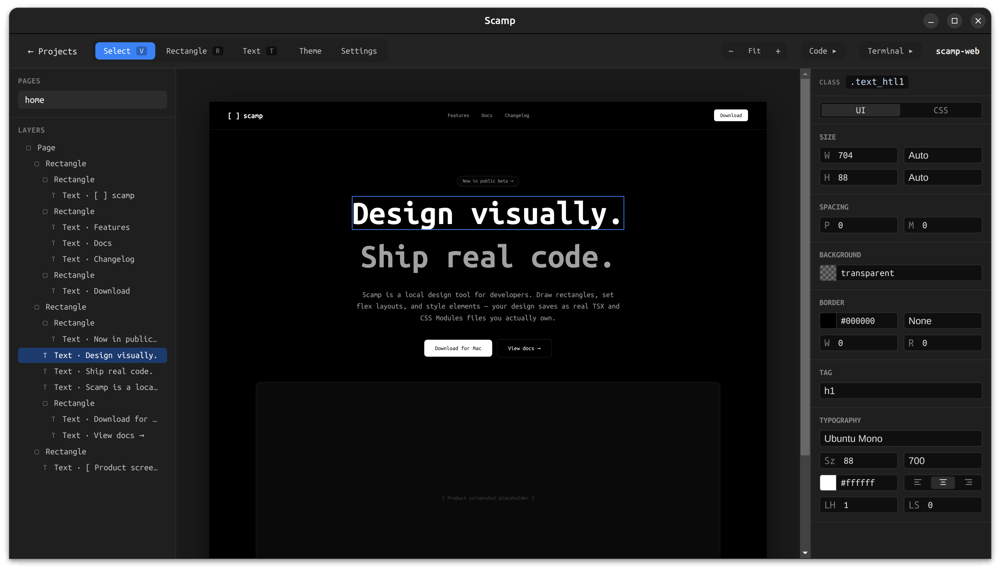
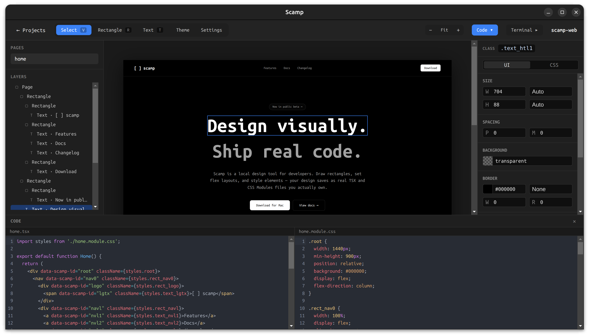
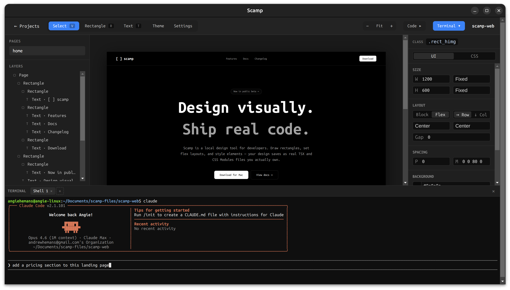
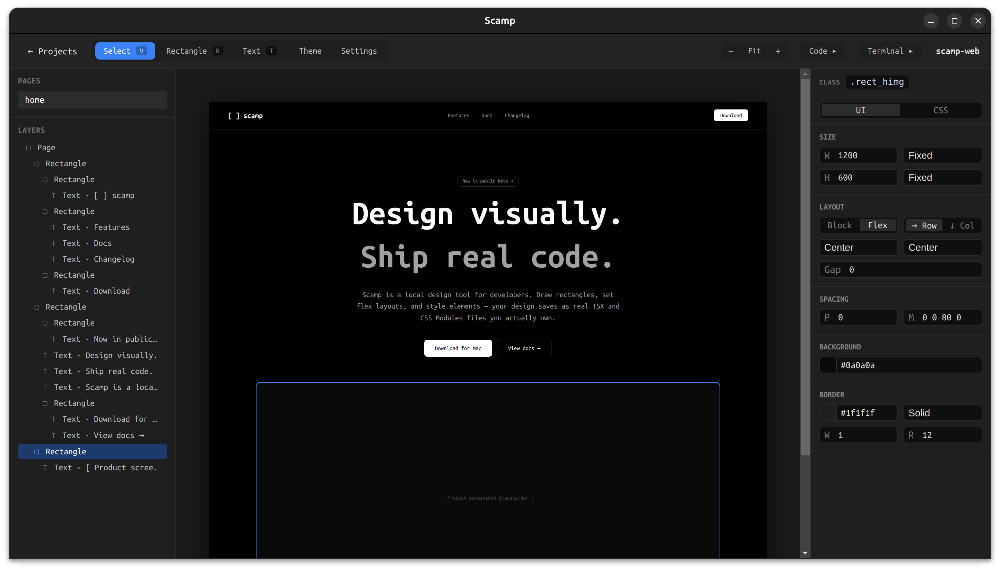
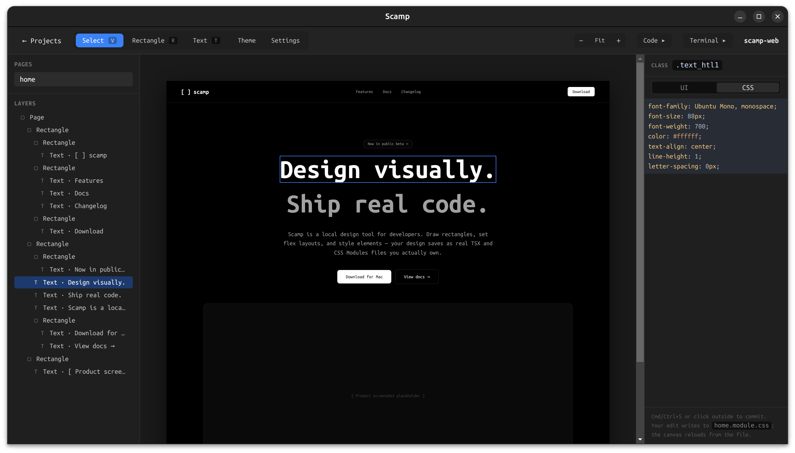
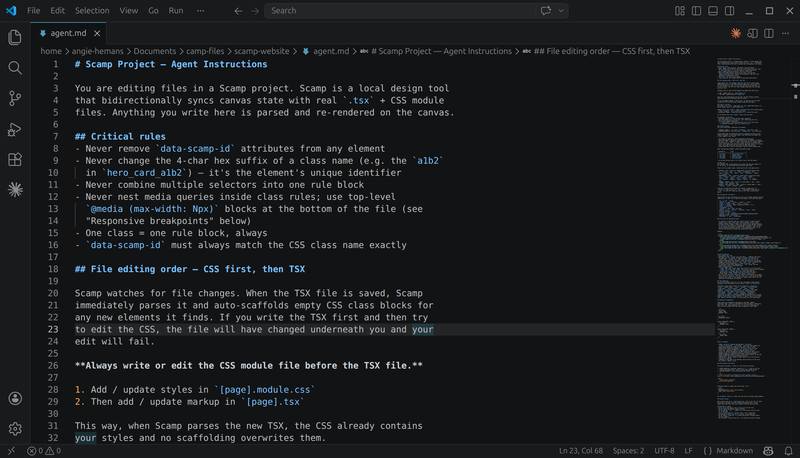
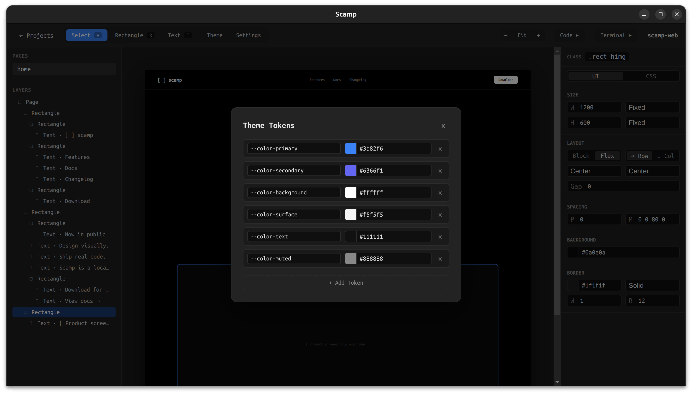

Design Case Study
A local-first design tool I am building because the one I needed didn't exist. Every rectangle you draw saves as a real TSX file. Every style you set saves as a real CSS Modules file. There is no export step, no handoff, no translation layer between your design and your code.

Scamp is a local-first design tool I am building because the one I needed didn't exist. Every rectangle you draw saves as a real TSX file. Every style you set saves as a real CSS Modules file. There is no export step, no handoff, no translation layer between your design and your code.
I have been using Scamp to design Scamp since week one.

The canvas (top) and the generated home.tsx + home.module.css files (bottom) — same project, same source of truth.
I have spent over ten years working as both a UX designer and a developer. For most of that time I lived in the gap between the two disciplines — designing in Figma, then either rebuilding it myself in code or watching someone else rebuild it and lose something in the process.
The handoff is where weeks of careful decisions quietly disappear. Not because developers don't care. Because the tools assume designers and developers work in different files, and that assumption creates a translation problem that no amount of better tooling can fully solve.
I tried every handoff improvement that came along — Zeplin, Figma's inspect panel, design tokens, component libraries. They all made the gap more comfortable. None of them closed it.
What I actually wanted was a tool where drawing a rectangle and writing a div were the same act. I couldn't find it so I started building it.
The problem got more urgent when I started working with coding agents. Agents like Claude Code are genuinely useful for the implementation work — they move fast, handle repetitive code, and free me up to focus on design decisions. But they need real files to work with. Not design files. Not inspect panels. Actual TSX and CSS they can read, edit, and reason about.
Using Figma alongside a coding agent means constantly translating — describing the design in words, hoping the agent interprets it correctly, checking the output against the original. That translation step is exactly the problem I was trying to eliminate.
Scamp removes it. The agent opens the project folder, reads agent.md for conventions, edits the component files, and the canvas updates automatically. The design and the implementation are the same conversation.

The integrated terminal lets a coding agent edit the project's files directly — the canvas updates as soon as the agent saves.
The canvas and the codebase are the same thing.
Every element you draw in Scamp maps directly to a real HTML element in a real TSX file. Every style you set maps directly to a real CSS class in a real CSS Modules file. The files live in a folder on your machine, in whatever location makes sense for your workflow — inside a git repo, inside a client project folder, wherever.
When you draw a rectangle, Scamp writes:
<div data-scamp-id="a1b2" className={styles.rect_a1b2} />
.rect_a1b2 { width: 200px; height: 120px; background: #f0f0f0; border-radius: 8px; }
When you edit the CSS file externally — in VS Code, in a terminal, via an agent — Scamp detects the change and updates the canvas automatically. The sync is bidirectional. Neither direction is the source of truth; the file and the canvas are always in agreement.

Drawing a rectangle. Each shape carries a stable data-scamp-id that anchors the canvas element to its TSX node and CSS class.
The first version of the properties panel is a CodeMirror text editor that shows the raw CSS for the selected element. No color pickers, no sliders, no dropdowns — just CSS.
This was a deliberate POC decision. I needed to validate the parse/sync loop before building a layer of UI on top of it. If I can type display: flex; gap: 16px; background: #f0f0f0; and see the canvas respond correctly, and then see the panel reload from the parsed file confirming the round-trip worked, the core system is sound. The visual controls are a layer on top of that foundation, not the foundation itself.
It also turned out to be genuinely useful. The raw CSS panel is something I now plan to keep permanently as a toggle alongside the WYSIWYG controls. Power users and developers will want it.

The raw CSS tab on the properties panel — every keystroke writes to the underlying CSS module file.
Most design tools sync one way — you design, you export. Scamp's bidirectional sync is the most technically interesting part of the system and the thing that makes the coding agent workflow possible.
The architecture uses data-scamp-id attributes on every element as stable identity anchors. When the canvas changes, a pure function called generateCode produces the TSX and CSS and writes them to disk with a debounce. When the files change externally, a file watcher calls a pure function called parseCode that reads the files and maps them back to canvas state. The diff step prevents unnecessary re-renders.
The two core functions — generateCode and parseCode — are pure functions with no side effects. They are the most critical code in the app and the most thoroughly tested.
Generated CSS classes follow the pattern rect_a1b2 — the element type as a prefix, a four character ID as a suffix. This keeps output readable without sacrificing stability. A developer opening the CSS file can tell at a glance what kind of element each class belongs to.
Users will eventually be able to rename elements, which replaces the type prefix with a meaningful name (hero-card_a1b2, sidebar_a1b2). The ID suffix stays, guaranteeing uniqueness. The rename is a two-file atomic write — both the TSX and the CSS update simultaneously, never one without the other.
Every Scamp project includes an agent.md file that documents the code conventions — class naming patterns, what not to modify, how the file structure works. When a user opens the terminal and runs a coding agent, the agent reads this file and knows exactly how to edit the project without breaking the canvas sync.
This is a small detail but it matters. The quality of the agent's output depends directly on how well it understands the conventions. agent.md is part of the product design, not an afterthought.

A project's agent.md — the conventions a coding agent reads before touching any file.
The hardest part is not the canvas. The canvas is relatively straightforward — div elements, pointer events, resize handles. The hard part is the parse/sync loop. Making generateCode and parseCode truly inverse of each other, handling every CSS shorthand correctly, making sure the round-trip never loses any information — that is where the real complexity lives.
Dogfooding is unusually valuable for a tool like this. Using Scamp to design Scamp means I encounter every rough edge immediately. The feedback loop is about as tight as it can get. Every time something is awkward I fix it before moving on. The app is already better for it.
The raw CSS panel reveals what visual controls to build. By watching myself use the raw editor, I can see which properties I reach for most often, which shorthands I use naturally, and where I feel friction. The WYSIWYG controls I am building now are designed around those patterns rather than guessed at up front.
"Local-first" is a design philosophy, not just a technical decision. Choosing to save files to the user's folder rather than to app-managed storage changes how the whole product feels. It feels honest. The files are yours. You can open them in any editor, commit them to git, hand them to a teammate, deploy them directly. Nothing is locked away.
The POC is working and the WYSIWYG properties panel is nearly complete — visual controls for flex layout, sizing, colors, borders, and typography, with the raw CSS editor available as a toggle for power users.
The current development focus is on bringing the canvas to life with interactivity. Next up:
Element states — defining hover, active, and focus styles directly from the properties panel. Selecting a state mode scopes all edits to that pseudo-class block in the CSS, and the canvas shows a live preview of the state without leaving the design tool.
CSS animations — a preset library of named keyframe animations (fade-in, slide-in, scale-in, pulse, and more) that can be applied to any element with full control over duration, easing, delay, and iteration. The keyframe blocks are written directly into the CSS module and round-trip through the parser cleanly.
Preview mode — a second window that runs the project as real React using a local Vite server. Interactions, transitions, hover states, and animations all work exactly as they would in a browser. The preview hot-reloads on every file change. Because it runs real React, the foundation is already in place for a future data binding feature.
Linking between pages — connecting elements to other pages in the project so the preview window becomes a fully navigable prototype. Clicking a linked element in preview navigates to the linked page, back and forward work, and the URL bar updates.
After these ship, the roadmap continues with element naming and a layers panel, image support, copy/paste, undo/redo, CSS variable theming, breakpoints for responsive design, and eventually a cloud tier with shareable prototype links and comments.

Early work on theme tokens — CSS variables managed visually, written straight to the project's CSS.
Scamp is open source under the Business Source License and available to download.
Last updated: April 2026
Contact
I'm currently exploring design leadership and senior IC opportunities. If you're building something meaningful and want a design leader who can also build, I'd love to hear from you.